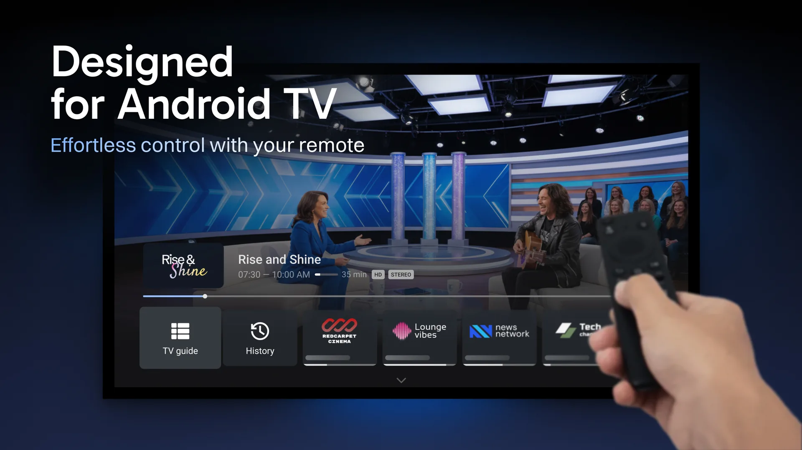
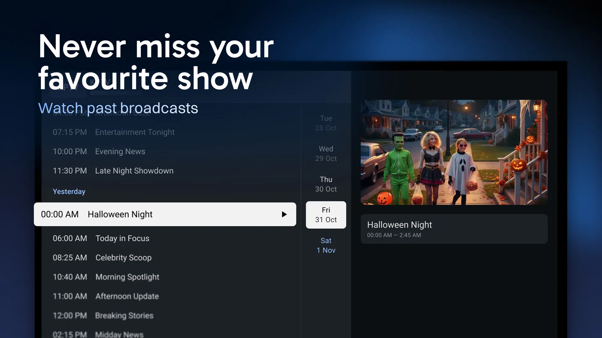

用了半年 TiviMate 才发现的 5 个必踩坑，第一个差点让我手机变砖
TiviMate 看着就是个 IPTV 播放器，配置完播放列表就能用，但实际上有好几个隐形门槛——侧载短码、MAC 地址、回看依赖条件，稍不留神就是认证失败或者看不了节目。
TiviMate 火了之后，从TiviMate官网拿到安装包装到了家里的 Firestick 上。一开始体验确实爽：换台快、节目单清晰、遥控器操作跟原生 Android TV 一样顺手。但好景不长，接二连三的毛病把我搞得焦头烂额——一会儿是订阅认证失败，一会儿回看功能灰着，更绝的是某个频道死活打不开。那时候我以为这软件就是个半成品，直到后来翻了一遍文档才发现，好多"软件 bug"其实是我自己没踩对节奏。
今天把我踩过的坑整理出来，都是真金白银换回来的教训。
坑一：随手搜个 Downloader 短码就装，差点装了个木马
买 Firestick 后第一件事就是装 TiviMate。Fire OS 上没有 Google Play，只能走 Downloader 侧载。我当时在某个论坛帖子里看到一个短码，没多想就输进去了，页面跳出来下了一个 APK，装完应用列表里倒是叫 TiviMate IPTV Player，但图标边缘有点模糊——当时也没太在意。
直到后来 Companion 买 Premium 时一直报"无法连接到服务器"，换了个网络也不行。我把 APK 卸了重新找来源，才发现那个论坛给的短码指向的根本不是开发者官方下载页，是别人打包的二次修改版，可能在里面塞了点东西。
症状：装完后应用行为怪异、Premium 验证失败、甚至出现请求莫名其妙的权限。原因：网上流传的第三方 Downloader 短码五花八门，你不知道它背后指向的是什么文件。TiviMate 的官方短码只有一个，就是开发者在自己的下载页上公布的那一个。解法：短码只用官方来源的那个。下载码本质就是把一长串 URL 缩短成六位数方便遥控器输入，去TiviMate下载页面找官方码最稳，犯不上用别人转发的。另外装完后看一眼应用名和图标对不对——名字应该是 TiviMate IPTV Player，开发者 Armobsoft FZE，包名 ar.tvplayer.tv。不对就赶紧卸。

坑二：Stalker Portal 的 MAC 地址直接用应用默认值，结果认证永远失败
某次服务商给了我一个 Stalker Portal 类型的订阅地址，跟我说"填个门户 URL 加 MAC 就能用"。我照着做了，应用会自动生成一个 MAC 地址，我没多想就保存了。然后就是长达三天的"无法认证"。
我一度以为订阅过期了，联系服务商后台一看——他们给我绑定的 MAC 根本不是应用自动生成的那个。Stalker Portal 是"门户认设备"的逻辑，服务商把你的账号绑死在一个 MAC 地址上，应用拿默认 MAC 去认证，当然对不上。
症状：添加 Stalker Portal 后一直报认证错误，换网络重填门户地址也没用。原因：应用自动生成的 MAC 跟服务商给你登记的 MAC 是两回事，你得把服务商发给你的那个逐段填进去。解法：拿到 Stalker 订阅时第一时间向服务商要 MAC 地址。换设备时还要通知服务商改绑，否则新设备的 MAC 同样认不出来。如果不是特别需要门户类订阅，优先走 Xtream Codes 接入，比 Stalker 省事得多。
坑三：回看功能灰着以为是 Premium 没买，其实有三个条件
朋友推荐我买 Premium 时说"买了就能看回看"。我二话没说买了，打开 EPG 找到昨晚的节目，按 OK——弹出"此频道不支持回看"。我当时就怒了：这不是骗人吗？Premium 花了钱回看看不了？
后来才弄明白，回看不是 TiviMate 单方面的事，它需要三驾马车同时跑起来才行：你得有 Premium 授权、你的订阅服务商得在服务端开启回看、还得是 Xtream 类的接入协议（纯 M3U 没有回看能力）。少一个都不行。我那个服务商本身就没开回看，跟我买没买 Premium 没关系。
症状：节目单里过去时段的节目点播放不了，或者直接灰着没有回放选项。原因：回看内容存在服务商的服务器上，软件这边只是个播放器。服务商没开这个功能，Premium 也救不了。解法：买 Premium 之前先问清楚服务商开不开回看功能。如果服务商不支持，Premium 里的回看功能你等于白买了这一块。单个频道不行而其他频道可以，那是那个频道本身没开回看，不是你的问题。

坑四：部分盒子装不上，以为系统不兼容——其实就是"未知来源"没开
家里那台杂牌安卓盒子，Google Play 里搜得到 TiviMate，但点安装就弹拦截提示。我以为这盒子的安卓版本太老不兼容，准备放弃了。
后来翻TiviMate文档才知道，非认证或刷过机的盒子，系统默认不允许安装"未知来源"应用。进设置里找到"安装未知来源应用"，给商店或文件管理器放行，重新装就好了。这根本不是兼容性问题，是系统安全策略在拦着。
症状：商店点安装被拦截、系统提示"此来源被禁止"。原因：部分盒子出于安全考虑，默认阻止非系统预装的应用安装。解法：进设置找"应用与安全"或类似选项，给商店权限放行即可。不同品牌叫法略有差异，但路径都差不多。
坑五：回看和录制的边界搞不清，错过预约
我之前以为回看和录制是一回事。回看是随点随放已经播出的节目，录制是提前约好等节目播出了自动存下来。但我搞混了好几次，以为"错过的直播反正可以回看"，就没预约下周凌晨那场球——结果服务商只开了三天回看，等我想起时已经过期了。
回看的可回溯天数完全由服务商配置，有的三天、有的七天，最长的我见过十四天，但不会更长了。录制是自己存到本地，存多久全你说了算。
症状：以为回看兜底就没预约录制，结果回看窗口过了看不了。原因：回看是服务商提供的临时回放，不是无限期存档。解法：知道某个节目肯定要的，别赌回看窗口，直接预约录制最稳。
防坑清单速查
- 侧载只用官方短码，第三方下载码一律别碰
- Stalker Portal 接入 MAC 地址必须填服务商给的，不要用应用默认值
- 回看功能 = Premium + 服务商支持 + Xtream 接入，缺一不可
- 盒子装不上先查"未知来源"，不是兼容性问题
- 重要节目直接预约录制，别赌回看窗口够不够长
说句公道话，TiviMate 本身确实是 IPTV 播放器里体验最好的那一档——界面干净、操作跟手机上的 Android TV 原生应用几乎没差别、遥控器布局也很合理。这些踩坑经验我也整理成笔记放在几个公开仓库里，GitHub、Gitee和GitCode上都有副本，方便不同网络环境的朋友查阅。只是它不像某些"傻瓜型"播放器那样把所有依赖条件都帮你兜好，稍微没注意就踩坑。把上面这几点记住，这软件其实相当省心。